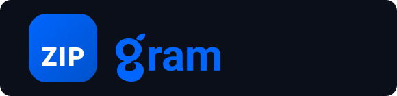
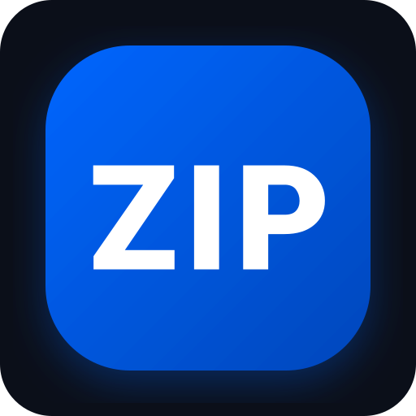
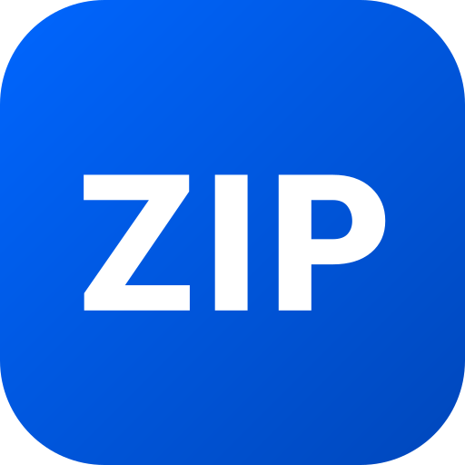

ZipGram Identity Presentation
A refined, modern, high-precision visual brand system designed for Android, iOS, Web, Desktop, and Chat Application Interfaces while preserving original identity.
1. Identity Evolution
Comparison between the original ZipGram reference logo and the refined vector system.


2. Full Brand Wordmark System
Perfectly proportioned logo wordmarks optimized for dark and light backgrounds.
3. Standalone App Icon System
Built for mobile app launchers (iOS/Android), desktop apps, web favicons, and splash screens.


4. Design Refinements Implemented
A breakdown of specific geometric and typographic enhancements.
Refined Distinctive "g"
Preserved the unique double-storey loop-tail 'g' shape while balancing stroke weights, ear curvature, and loop counter spaces.
Clean "ZIP" Lettering
Utilized Plus Jakarta Sans Heavy for crisp, sharp, geometric uppercase typography with expanded kerning inside the squircle icon.
Balanced Squircle Proportions
Engineered a 1:1 squircle container with smooth 26px corner radii to match modern iOS/Android UI standards.
Optimized Spacing & Baseline
Precisely calibrated gap distance between the blue icon and "gram" wordmark for optical balance across all viewing distances.
Modern Technology Language
Infused crisp vector paths and vibrant brand blue gradients without relying on dated 3D effects, drop shadows, or clutter.
Cross-Platform Versatility
Ensured flawless scaling from 16px micro-favicons up to high-resolution splash screens and promotional banners.
5. Color System
Vibrant, premium brand blue with high-contrast neutral backgrounds.
6. Application Interface Context
In-app preview demonstrating logo integration within a modern social chat header.